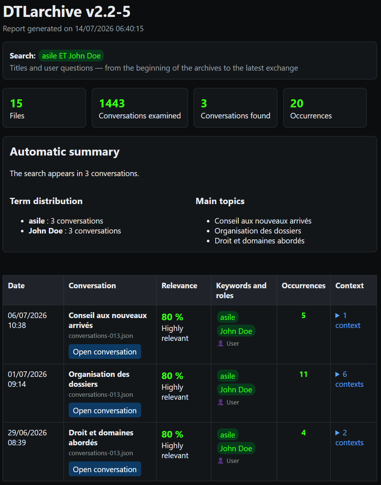

DTLarchive — User Guide v2.2-10
The what, why, and how of every feature.
Lire ce guide en françaisGetting started
What is DTLarchive for?
DTLarchive searches and gathers the knowledge stored in your ChatGPT conversation archives. It turns the export's JSON files into a local index, then produces a readable report that preserves the context of every match.
Audience: all users
Prepare the archives
What?
DTLarchive reads files named conversations*.json from a ChatGPT export.
Why?
These files contain the titles, dates, questions, and answers needed for searching.
How?
Extract the ChatGPT export into a folder you can easily find. Do not modify the JSON files before selecting them.
Quick walkthrough with the executable
- Double-click
DTLarchive.exe. - Type
1and press Enter to switch to English. DTLarchive repeats the current question in English; press Enter again to continue. - In File Explorer, select one or more
conversations*.jsonfiles, then confirm. - Review the available period. Optionally enter a start date and an end date in
dd/mm/yyyyformat, or leave the fields blank. - Enter your search, then choose
1,2, or3to determine which parts of the conversations are examined. - When processing is complete, press a key. The report opens in your default browser.
Main features
Choose a language and request help
What?
The complete interface is available in French and English. Contextual help is available at every interactive question.
Why?
The selected language applies to questions, errors, windows, reports, conversation pages, and logs.
How?
At the first question, type 1 for English or press Enter for French. Type ?, aide, help, or h to display an explanation of the current question.
After a help request, DTLarchive displays the explanation and repeats the same question. Switching to English works the same way: no step is skipped.
Select archives and populate the index
What?
You can combine several archive files in a single search. DTLarchive records them in a persistent SQLite index.
Why?
The index speeds up later searches and avoids rereading unchanged files. A conversation duplicated across several exports is retained only once.
How?
In the selection window, hold Ctrl to choose separate files or Shift to choose a continuous range, then click Open.
During the update, the name of the current file is displayed. The final message states how many archives were imported or reused. Keep DTLarchive-index.sqlite next to the application to benefit from this reuse.
Limit the search to a date range
What?
The date filter keeps only conversations dated between two inclusive limits.
Why?
It reduces the number of results when the same terms occur across several years.
How?
Enter dates in dd/mm/yyyy format. Leave the start date blank to begin with the earliest archive, the end date blank to continue through the latest exchange, or both blank to search everything.
DTLarchive first displays the period actually available. If the end precedes the start or the range does not overlap any archive, it explains the error and asks for the dates again. A partially covered range remains valid.
Write a search query
What?
A search can contain a word, phrase, alternatives, required terms, an exclusion, or a word prefix.
Why?
The syntax lets you broaden or narrow the results without an AI service or semantic interpretation.
How?
Enter words as they may appear in the conversations. Combine them with AND, OR, a comma, -, or *.
| Need | Entry | Effect |
|---|---|---|
| One word | retirement | Finds conversations containing that word. |
| A phrase | white card | Searches for the complete phrase in the same order. |
| Alternatives | insurance, pension | Finds either term. OR and a semicolon have the same role. |
| Required terms | asylum AND John Doe | Requires both terms in the same conversation. |
| Two groups | asylum AND John Doe, pension | Searches for either the complete first group or pension. |
| An exclusion | backup, -network | Excludes every conversation containing network. |
| A word prefix | print* | Finds words such as print, printer, and printing. |
ET/OU and English AND/OR are accepted in either interface.Choose the search scope
What?
The scope determines whether DTLarchive examines your questions, ChatGPT answers, or both. Titles are always examined.
Why?
Searching only your questions retrieves your intentions; searching answers is better suited to information written by ChatGPT.
How?
Type 1 for titles and your questions, 2 for titles and answers, or 3 for everything. Pressing Enter selects 1.
Read the report and restore context
What?
The HTML report ranks matching conversations and shows terms, roles, occurrences, and contextual excerpts.
Why?
You can quickly assess a result before opening the complete conversation.
How?
Begin with the summary and statistics. In the table, click the context count to expand excerpts, then click Open conversation to jump to the first matching message.

The score prioritizes matches in the title, followed by your questions and then ChatGPT answers. It also increases with the number of occurrences and distinct terms. The “main titles” are titles of matching conversations, not AI-based thematic analysis.
Reuse structured results
Audience: experienced user
What?
mining_results.json contains the run settings, statistics, conversations, scores, terms, and contexts.
Why?
This output can serve as a first stage for knowledge extraction, comparison, or knowledge-base enrichment tools.
How?
Retrieve the file from DTLarchive-output and import it into software that accepts JSON. Use the metadata to retain the source, period, and scope of the search.
Advanced use
Manage and rebuild the SQLite index
Audience: experienced user
What?
The default index is DTLarchive-index.sqlite. It remembers archives already processed and makes later searches faster.
Why?
A rebuild may help after moving many archives, an incompatibility warning, or doubts about the indexed content.
How?
Close DTLarchive, then start it from the command line with --reindex. To preserve the old index, specify a new path with --index.
DTLarchive.exe D:\Archives\ChatGPT --mots-cles "retirement" --reindex
Rebuilding clears the selected index and reimports the supplied archives. It does not delete your ChatGPT export files.
Automate a search from the command line
Audience: experienced user
What?
The command line provides the same functions without interactive questions.
Why?
It lets you repeat a search, choose exact output locations, and include DTLarchive in an automated process.
How?
Open PowerShell in the DTLarchive folder, enter the executable or script, archives, and options. Enclose paths or searches containing spaces in quotation marks.
.\DTLarchive.exe "D:\Archives\ChatGPT" ` --mots-cles "asylum AND John Doe, OFPRA" ` --date-debut 01/01/2024 ` --date-fin 31/12/2025 ` --role user ` --lang en
| Option | How to use it |
|---|---|
| files or folders | Place one or more paths immediately after the program name. In a folder, the default pattern is conversations*.json. |
| --mots-cles | Add the search between quotation marks. |
| --date-debut / --date-fin | Enter inclusive dates in dd/mm/yyyy format. |
| --role | Choose user, assistant, or both. |
| --output | Specify the folder in which to create the report, pages, and JSON. |
| --pattern | Specify another file pattern, for example conversations-2025*.json. |
| --index | Specify the path to another SQLite file. |
| --reindex | Add this option alone to fully rebuild the selected index. |
| --quiet | Add this option alone to hide the console summary. |
| --lang | Use fr or en. |
| --help / --version | Display option help or the version respectively, then exit. |
On the command line, an invalid date, reversed period, period with no overlap, or missing archive stops execution with exit code 2.
Read the diagnostic log
What?
Each run appends to a daily HTML log in the logs folder.
Why?
The log helps explain a rejected archive, index error, incorrect setting, or unexpected stop.
How?
Open logs\DTLarchive_YYYYMMDD.html in your browser. Find the relevant run time, then read lines marked ERROR or WARNING.
If you request support, provide the DTLarchive version and copy only the useful lines. First check that they do not contain a path or information you do not wish to share.
Help and security
Solve common difficulties
| Observation | How to respond |
|---|---|
| No archive selected | Restart DTLarchive and choose at least one extracted conversations*.json file. |
| Invalid date | Use the exact dd/mm/yyyy format, for example 01/06/2026. |
| No conversation in the period | Compare your dates with the displayed available period, then widen or clear one limit. |
| No result | Check spelling, remove an exclusion, replace AND with a comma, or choose scope 3. |
| Too many results | Add a term with AND, an exclusion with -word, or a shorter date range. |
| Incompatible or unreadable index | Close the application and rebuild the index with --reindex. Read the log if the error persists. |
| The report does not open | Manually open DTLarchive-output\DTLarchive-report.html in your browser. |
Protect privacy
- Keep exports, the SQLite index, reports, conversation pages, JSON, and logs in a protected location.
- Do not publish a report without reviewing the excerpts it contains.
- Delete the output folder when it is no longer useful, independently of the original archives.
- DTLarchive sends neither archives nor searches online; opening a report only uses your local browser.
Quick glossary
| Term | Meaning |
|---|---|
| JSON archive | Structured ChatGPT export file containing conversations. |
| SQLite index | Local database used to remember and quickly search archive content. |
| Scope | Parts examined: titles, questions, answers, or a combination of these items. |
| Occurrence | Presence of a search term in a conversation. |
| Context | A match with nearby messages that help explain its meaning. |
| Results JSON | Structured, reusable version of the run results. |